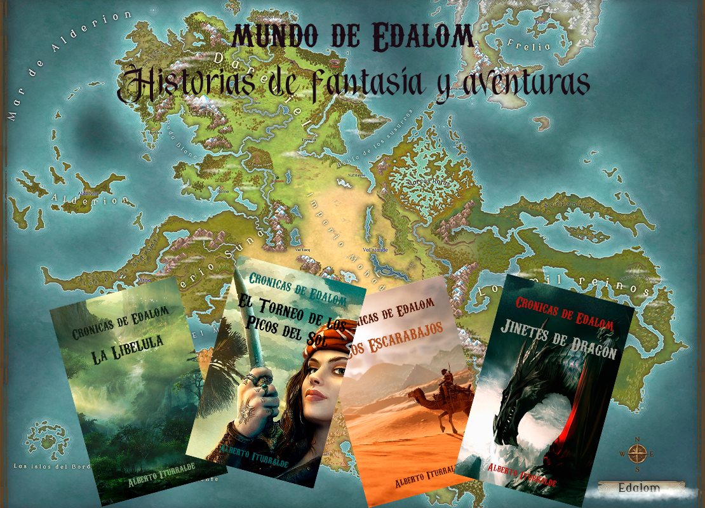

¡Bienvenido a mi blog!
¡Adentrate en Edalom, un mundo de fantasía lleno de misterios e intrigas, con estos cuatro relatos que transcurren en lugares totalmente distintos! Las historias son gratis y se pueden leer en mi web o descargar en epub.
O bien empieza directamente con el primer libro de la saga de fantasía juvenil de Gundolan, un mundo donde varios países poseen el poder de controlar los elementos.

¡Adéntrate en los relatos gratuitos de Edalom!
Derren, cazador de los Mil Reinos acude a los bosques de Colmillos Verdes para cazar a la extraña criatura que está sembrando el caos.
Tras ser traicionado y perderlo todo, Akun integra el movimiento rebelde de los escarabajos, cuyo objetivo es acabar con la monarquía de Mohad.
An Long es un muchacho de aldea que, gracias a su coraje, logrará hacerse un sitio en las cumbres del Tiber, donde se forman a los jinetes de dragón.
¡O hazte gratis con el primer libro de la saga juvenil de Gundolan!

El país del viento se ve desestabilizado por el robo de una reliquia. Izar, recién coronado gunar, se ve envuelto en el robo. Su único deseo es volver a casa con los suyos. Pero no será tan fácil. ¿Realmente son los suyos?

Las noticias de los vientos fríos del noreste llegan a Egan y vuelan de boca en boca. La amenaza que se cierne sobre el país del agua llegará al sur y acabará con todos. ¿Lograrán las Grandes Potencias unirse para repeler el mal?

La guerra es larga, las tormentas más frías, las olas más salvajes. El parón del comercio marítimo ha empobrecido al continente. La unión es imperfecta. Izar sabe lo que hay que hacer: buscar ayuda en tierras lejanas, en tierras míticas.

La Historia se repite. Los vientos anuncian que Lagura volverá a ser decisiva. Con la esperanza de no repetir la matanza anterior, el continente se prepara para expulsar al enemigo. La unión y las cuatro piedras serán cruciales.